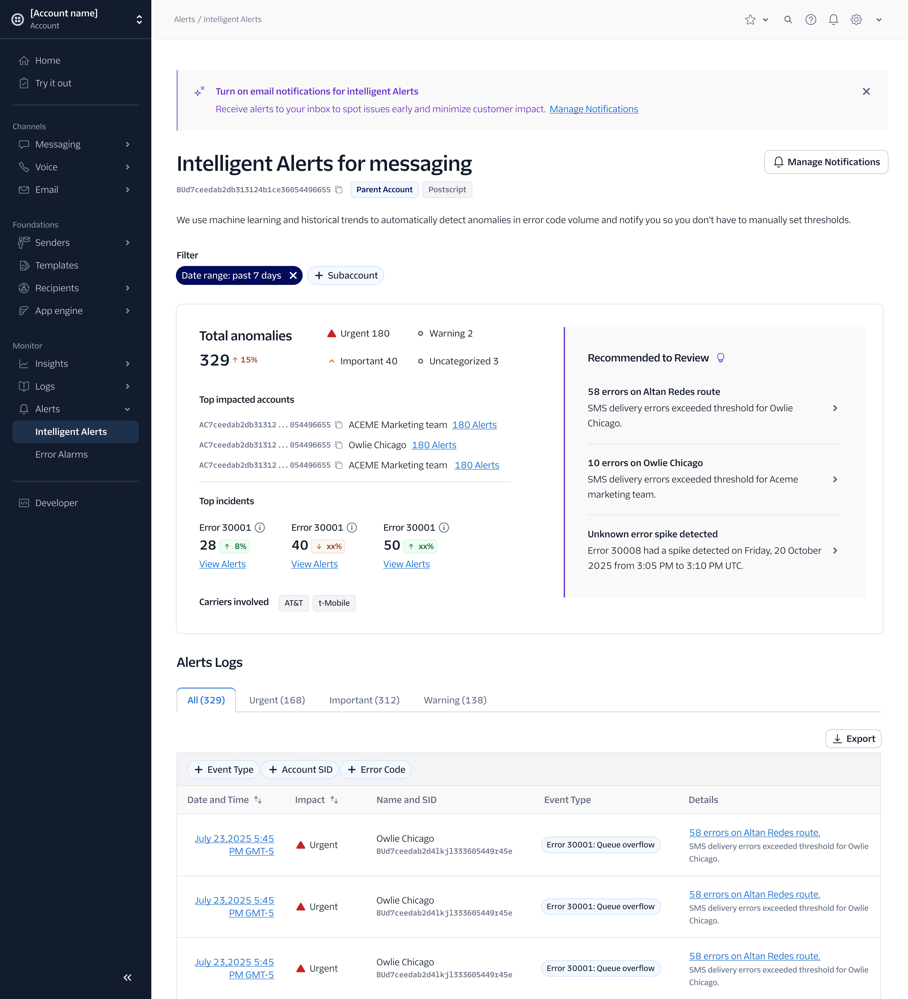
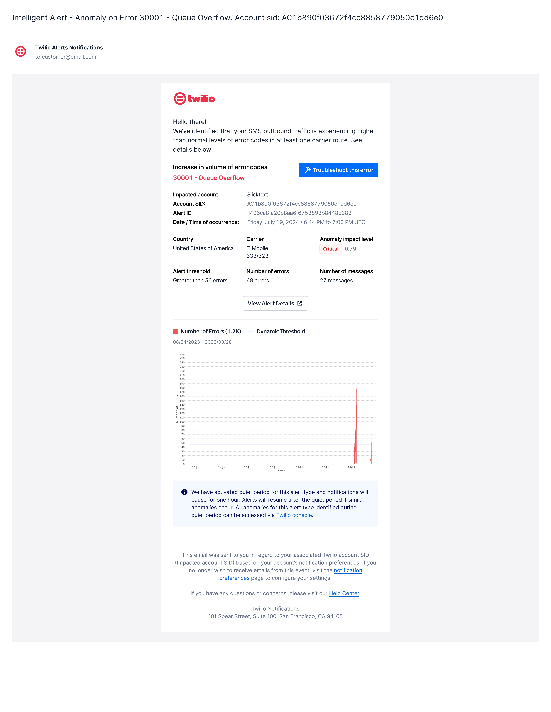
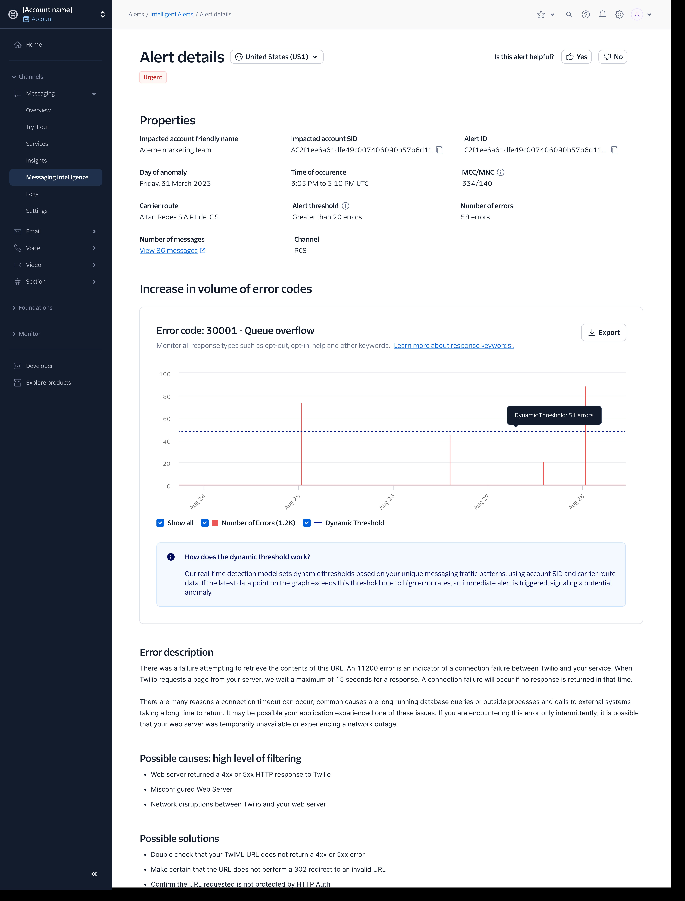
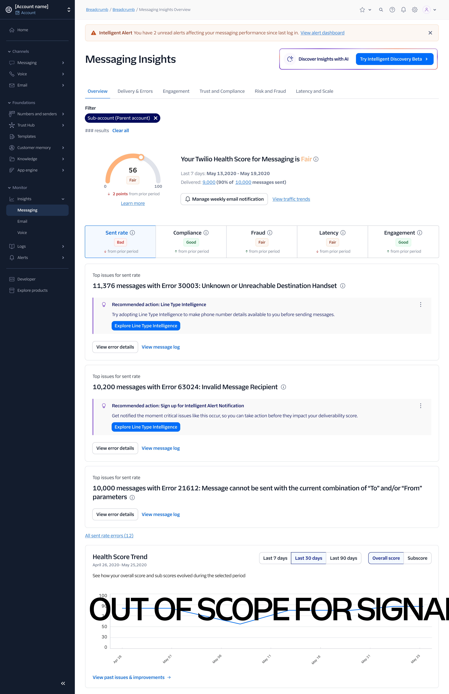
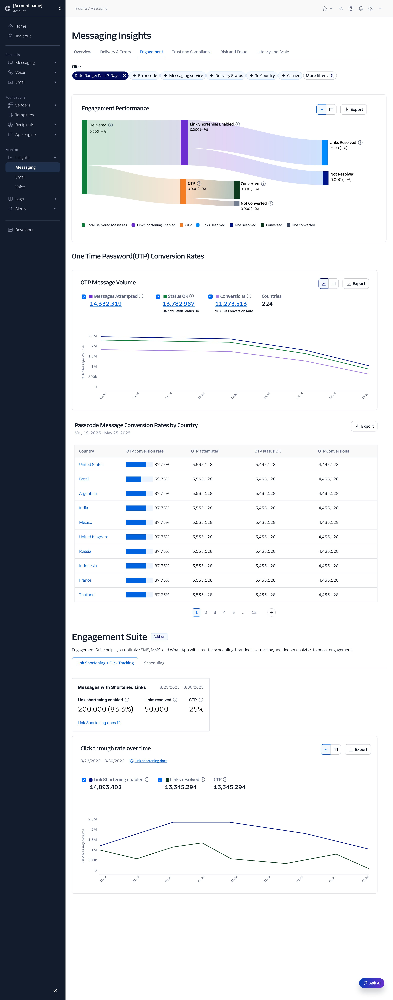
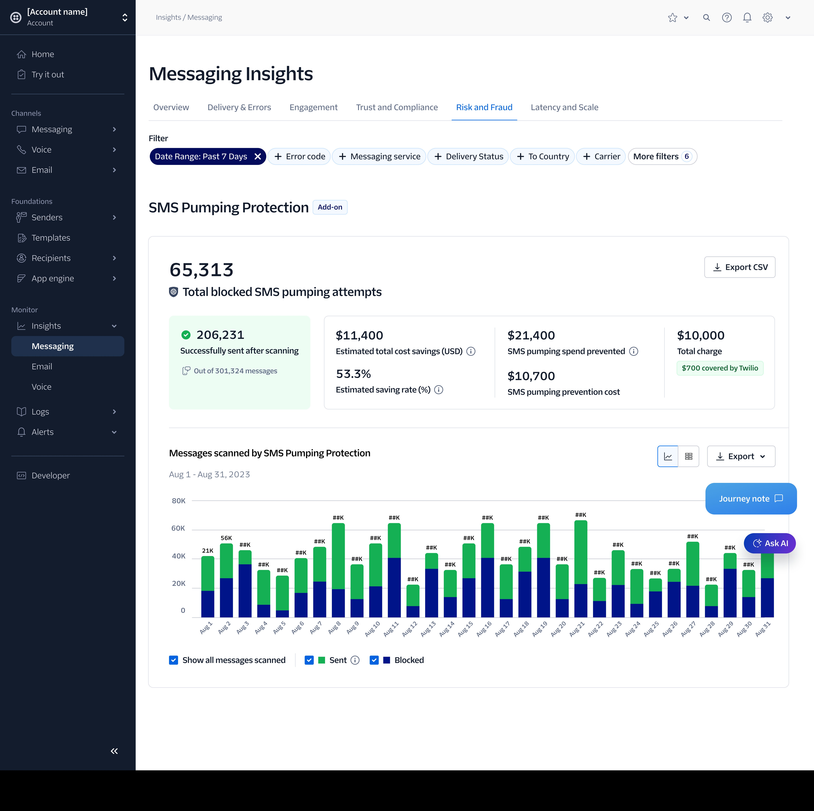

Two distinct products that live at different points in the troubleshooting journey — one detects anomalies in real time before users notice them, the other gives them the full picture to investigate and understand what happened. This is the execution story: the design decisions, the patterns, and the craft behind both.
Intelligent Alerts operates in real time. It monitors traffic continuously using ML models, detects when something anomalous happens — a spike in error 30001, an unusual drop in delivery rate — and notifies you immediately. It's the product that tells you there's a fire.
Messaging Insights is where you go to understand that fire. It's a suite of 6 dashboards that aggregate the last 7 days of messaging data across delivery, engagement, OTP conversions, risk, and fraud. It tells you what happened, why, and where. The Health Score, also part of Insights, is a weekly retrospective — a snapshot of how your messaging performed across 5 dimensions — not a live monitor.
My job was to design them as distinct, purposeful products — with their own UX logic — while making sure the handoff between them felt seamless.
An ML-powered system that dynamically configures thresholds based on each account's historical traffic, detects anomalies in error code volumes, and proactively notifies users — before their customers notice a problem.

Intelligent Alerts overview — anomalies categorized by impact level, with recommended reviews surfaced by the ML model

The email is step zero of the troubleshooting flow — often the first thing a user sees when something goes wrong. I designed it to be fully actionable without opening the console: error code, severity, carrier, threshold breach, and timestamp, all in a single glance.
The design principle: by the time users click through to the console, they already know what they're dealing with. The click is to investigate deeper — not to find out what happened.

The in-console detail picks up where the email left off — showing the full anomaly timeline, the dynamic threshold that triggered it, ranked possible causes, and step-by-step resolution guidance.
Information hierarchy was the key design decision here: what happened → why it matters → what to do. Users can also submit accuracy feedback, which feeds back into the ML model over time.
A suite of 6 redesigned dashboards for monitoring and investigating messaging performance — the place users go when an alert fires, or proactively to understand the health of their traffic over time.

The Health Score is a retrospective snapshot — not real-time. It refreshes weekly and scores your messaging across 5 dimensions: Sent Rate, Compliance, Fraud, Latency, and Engagement. This distinction from Intelligent Alerts is intentional and explicit in the design.
I added product recommendations directly beneath each subscore — so "your Fraud score is low" connects immediately to "here's the Twilio product that fixes it," without leaving the page. It closes the loop between diagnosis and action.

The Engagement dashboard surfaces OTP conversion rates, link click-through performance, and a Sankey diagram showing how delivered messages flow into measurable outcomes. I redesigned the hierarchy so critical KPIs are immediately scannable at the top, with drill-down available below.
The Engagement Suite add-on is surfaced inline with real account data — giving users the context to understand its value without a separate sales flow.

The Risk & Fraud dashboard shows the output of SMS Pumping Protection — blocked attempts, cost savings, and traffic over time. A key design decision: making the monetary value of protection explicit and prominent. "Your protection prevented $21,400 in SMS pumping spend" turns an invisible security layer into a concrete, reportable business metric.
Beyond the individual features, the Insights redesign produced design decisions that became standards across Twilio's broader design organization.
Defined a chart component with hover tooltips, click-to-drill-down, and toggle series. This pattern was adopted org-wide as the standard data visualization approach across Twilio's design system — not just Insights.
Rebuilt how filters are applied, combined, and persisted across all 6 dashboards. Reduced the steps to isolate a specific error from 6 interactions to 2, and maintained filter state across dashboard tab navigation.
Restructured the 6 dashboard tabs to follow how engineers actually investigate — Overview → Delivery → Engagement → Risk. The order is a UX decision, not a product list: it mirrors the natural troubleshooting sequence.
"Every week once we get the Score email, I forward it to leadership as a KPI. The simplicity of the score makes it easy — our goal is to be above 80%."
Enterprise customer · What if Media Group